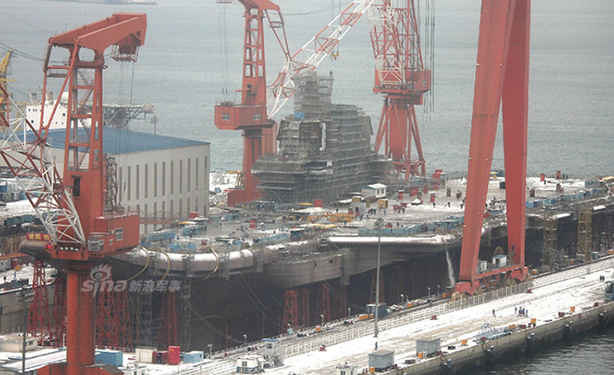

新闻合集
002航母究竟用哪种起飞方式 我少将称电磁弹射最佳

近日，有媒体报道称，中国第二艘国产航母于去年3月就在江南造船厂开工建造，而且该航母舰载机将采用弹射型。军事专家在接受央视采访时表示，如果中国未来建造第二艘国产航母，最好是采用电磁弹射起飞的方式，因为采用电磁弹射起飞模式的航母甲板使用效率要比滑跃起飞高得多。
香港《东方日报》网站12月26日刊文称，众所周知，目前在大连造船厂生产的第一艘国产航母只是中型航母，载重五万吨，滑跃起飞，基本还是对“辽宁”舰也就是苏联“瓦良格”号航母的仿制和翻版，并无质的突破。而江南造船厂生产的第二艘航母则是中国自主生产、自主设计，标示着中国军用船只生产技术出现历史性的突破。
10月底，国防部新闻发言人吴谦表示，我国首艘国产航母已完成设计工作，主船体已在坞内合拢成型，正在开展设备安装和舾装等建造工作。
在大家期盼着首艘国产航母下水的同时，也有报道猜测，中国可能会接着建造一艘采用舰载机弹射起飞模式的航母。对此，尹卓表示，无论是蒸汽弹射还是电磁弹射技术，对我国而言已没有任何瓶颈。“作为研究人员，我们也希望能实现弯道超车，直接发展电磁弹射（航母），实现与美国比肩。”

尹卓认为，如果中国未来建造第二艘国产航母，最好是采用电磁弹射起飞的方式。因为航母甲板使用面积越小，舰载机的攻击效率就越低。航母若采用电磁弹射装置，其甲板使用效率要比采用滑跃起飞高得多。
谈到中国未来航母战斗群的发展数量，军事专家王明志表示，中国作为一个大国，需要一支强大的海军以维护国家利益。国家要根据综合国力以及对海外利益的情况等确定航母建造数量。如果我国建造三个航母战斗群，其中一艘航母作为备份，另外两艘航母能按照不同的作战模式来灵活规划，既可以在某个方向采用单航母战斗群，也可以在某个重要方向出动双航母战斗群作战。